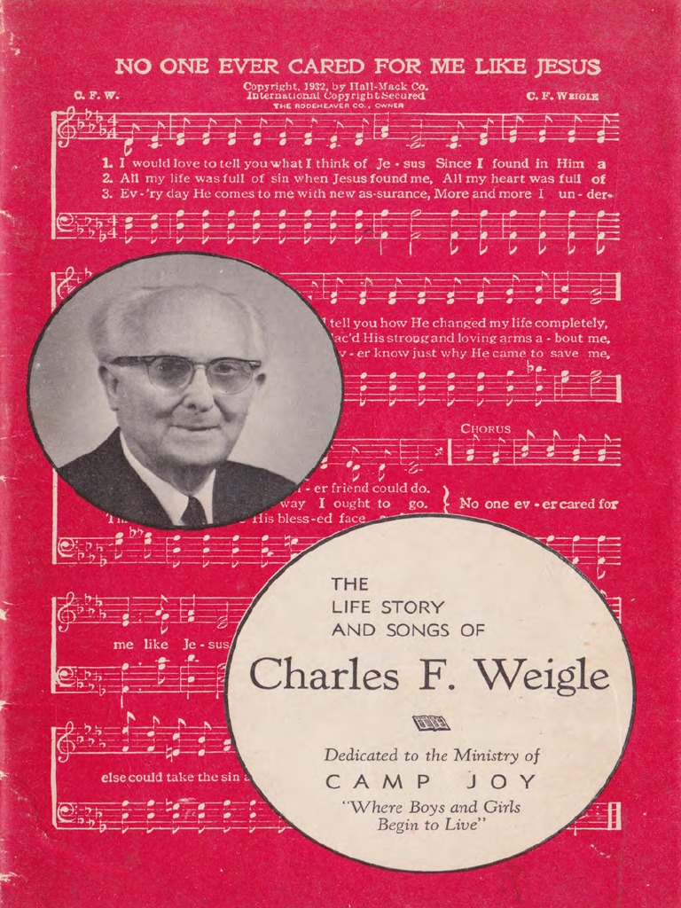

1565 GP476 I Sing Of Thee oh blessed Christ 我歌颂祢，尊貴的主
|
|
|
I sing of thee, oh blessed Christ,
For thou hast saved me by thy grace.
Redeemed by thee at dreadful price,
With angels I would sing thy praise.
CHORUS:
I sing of thee, oh blessed Savior,
Thy praise shall now my tongue employ.
I’ll sing of thee, oh Lord, forever,
For thou hast filled my soul with joy.
I’ll sing of thee and smile through tears,
When sorrows come to make me sad.
For I remember through the years
Thy grace, and sing because I’m glad.
I’ll sing of thee while life shall last,
At home, abroad, on land or sea.
And when through death to life I’ve past,
Forevermore, I’ll sing of thee.
|
我歌頌你，尊貴的主，藉你恩典，把我救贖；
你救贖我代價極重，我與天使向你歌頌。
我歌頌你，縱淚滿襟，憂傷來臨，仍覺歡心；
因我回想救主恩典，使我歌唱快樂無邊。
我歌頌你，直到離世，不論在家，海洋陸地；
或經死亡進入永生，永永遠遠我歌頌你。
副歌：我歌頌你，尊貴的救主，用我口舌向你謳歌，
我歌頌你，永遠歌頌你，因你喜樂已充滿我。
|

https://www.zanmeishi.com/tab/26051.html?songbook=1&index=476
|
| |
|
https://youtu.be/xVOaT_NgPfw
I Sing of Thee / 我歌頌祢 || Glory Chinese Baptist Church
https://youtu.be/36bUz7YkoF4
Charles Weigle No One Ever Cared For Me Like Jesus
http://www.hymncompanions.org/May/30/stream.php
我歌頌祢
I Sing of Thee
我歌頌祢，尊貴的主，藉祢恩典，把我救贖；
祢救贖我代價極重，我與天使向祢歌頌。
我歌頌祢，縱淚滿襟，憂傷來臨，仍覺歡欣；
因我回想救主恩典，使我歌唱快樂無邊。
我歌頌祢，直到離世，不論在家，海洋陸地；
或經死亡進入永生，永永遠遠我歌頌祢。
（副歌）
我歌頌祢，尊貴的救主，
用我口舌向祢謳歌，
我歌頌祢，永遠歌頌祢，
因祢喜樂已充滿我。
 (請點耳機收聽)
(請點耳機收聽)
一個優秀的詩班班員，必須經過一段時間的訓練，先要學習發聲，與其他班員和聲，服從指揮的調配和領導。若事先沒有充分的練習，就不能唱出歌的精粹。我們想做天上的詩班，必須先在地上作準備，在患難中練習發聲，憂傷中學習表情，在神的指揮下，順從祂的帶領，作靈命的操練。
這首聖詩的詞是韋格爾（Charles F. Weigle, 1871-1966）所作。他是一位佈道家，長年在外巡迴佈道。

有一次，他在佈道會結朿回家時，發現妻子留條出走，她說她已受夠了做一個佈道家的妻子。妻子的離去令他十分沮喪，一度他覺得生無樂趣，無人能領會他被棄的感受、和生活上的孤獨，甚至意圖自殺。
他走向墨西哥灣，想跳下去結束人生的折磨，然而心中有一鼓力量把他拉住。回家後，他坐在琴旁，邊彈邊唱，在廿分中內，完成了這首感人的詩歌，「無人像耶穌這樣愛顧我」（No
One Ever Cared for Me Like Jesus）：
讓我向你述說主耶穌的寶貴，祂是我忠心朋友永不改變；
讓我向你述說祂如何改造我，無人像祂救我脫離眾罪鏈。
當我陷在罪中時，主來尋找我，那時我心中充滿失望痛苦；
耶穌用慈愛大能膀臂扶助我，引導我走那永生公義道路。
（副歌）
無人像耶穌這樣愛顧我，無朋友像主這樣仁愛；
無人像祂能把我罪惡全赦免，主愛我何等大哉！
(請點耳機收聽)
這首詩歌敘述韋格爾當時心靈破碎的情景。筆者在四十年前，第一次聽到一位牧師，用他渾厚的男低音，含著淚光深情地唱「無人像耶穌這樣愛顧我」，許多會眾深受感動而淚下，給我留下了不可泯滅的印象。
許多偉大的詩歌都是作者在痛苦的深淵中寫成，苦難使我們親近神。韋格爾數年掙扎在靈命的低潮中，最後他靠主，從孤單、憂鬱、悲哀中走出來；靈命復甦，重新得力，歌頌救主。他一共作了四百餘首聖詩，而「無人像耶穌這樣愛顧我」是最為眾人所喜愛的一首。
中英文聖詩集參考
英文歌名 I
Sing of Thee
教會聖詩 476
聖徒詩集 198
聖詩 253
青年聖歌I 8
校園詩歌I 133
英文歌名 No
One Ever Cared for Me Like Jesus
青年聖歌I
172
校園詩歌I 191
https://wordwisehymns.com/2010/11/20/doesnt-ministry-begin-at-home/
Doesn’t Ministry Begin at Home?
There are at least three versions of the story behind No One Ever Cared for Me
Like Jesus–differing in some details from one another. The interesting thing is
that two of them come directly from the author, Charles Weigle himself.
Available on YouTube, one (here) is an hour long reminiscence that includes the
story behind the hymn. The other (here) is a short account, more specifically
about the song. Both clearly were given when Mr. Weigle was elderly, and it is
understandable that some of the details had become hazy. However, the more I
listened to these recordings, the more uncomfortable I felt.
The story as I originally tracked it down, was that Weigle’s wife was a wayward
and worldly woman who, in the end, couldn’t continue to stomach his Christian
stand, and so she left him. But from the man himself we get a hint something a
little different.
Charles Frederick Weigle was a traveling evangelist, constantly on the
go, often away from home. Reading between the lines of his own description, his
wife comes across as a lonely, and possibly weak woman. It seems they had at
least one child (a daughter). And there Mrs. Weigle was left alone, to raise her
daughter almost as a single mother, and to face her personal temptations and
spiritual struggles on her own.
Mrs. Weigle, again by her husband’s own account, plead with him again and again
to please stay home and help her. But he adamantly refused, saying he was called
of God to be an evangelist, and called to do the work of the Lord. He virtually
says that his wife’s pleadings were the devil’s attempt to hinder his work for
God.
Exactly at this point, I have a problem. And I must tread carefully here. I do
not presume to sit in judgment over this man, who left us more than four decades
ago. His evangelistic ministry seems to have borne fruit, and his many songs are
heartwarming. Further, I don’t think there is one inflexible rule in this
matter. The Lord does lead different people different ways. But without
condemning Charles Weigle in particular, I do think there are issues that need a
closer look.
Though it’s possible to see a traveling evangelistic ministry as a noble
service, requiring great sacrifice, there is another point of view. There is
something inflating to the ego about moving masses of people by emotional
appeals, and hearing words of praise for “your wonderful ministry,” over and
over. And it is much easier to put on a pious Christian face with strangers,
those who do not get a chance to see us in our worst moments. It is often harder
to stay at home and deal with the colds and flu, and shopping, and broken water
lines, and bills, and the inevitable conflicts. But that and more is all a part
of family life.
I do not know what vows were repeated at the Weigles’ wedding. But given the
time in which they lived, they likely followed the traditional form. That would
mean the groom was called upon to respond in the affirmative to a question
something like this, regarding his bride:
“Wilt thou love and comfort her, honour and keep her, and in joy and sorrow,
preserve with her this bond, holy and unbroken, until the coming of our Lord
Jesus Christ, or God by death shall separate you?”
Now, some questions:
Even if the Lord were to call a husband to some kind of public ministry–pastor,
evangelist, missionary, or something else–does not the care of his wife and
family remain a significant part of his Christian service?
Is the latter service for the Lord to be relegated to second place, and the
former always to take the bulk of the man’s time, and energy, and financial
resources?
Can he fulfil God’s command to love his wife just as Christ loved the church and
gave Himself for her (Eph. 5:25), by rarely being home to give practical support
to those committed to his charge?
What if such a husband were called to a time-consuming ministry that pressured
him to be more and more an absentee from the home? But what if he determined to
curtail those absences significantly, and put more focus on his family? Would
the Lord not honour that?
And if he was open to it, could the Lord not have revealed some new kind of
ministry that husband and wife could be involved in together? Or one that
enabled him to be the involved husband and father he should be?
Again I say, the Lord leads different people in different ways. I’m not
presuming to judge in any individual situation. But I do think this issue
deserves a very careful and prayerful examination. I’ve met MK’s and PK’s
(missionaries’ kids, and pastor’s kids) who grew up bitter and resentful toward
the church and the things of God, because they were always relegated to second
place after “the Lord’s work.” I’m not for a moment excusing a bitter spirit in
such a case, but I do wonder if the fault is all on one side. The Lord’s work,
like charity, surely begins at home.
https://youtu.be/36bUz7YkoF4
Charles Weigle No One Ever Cared For Me Like Jesus
Most widely held works about Charles F Weigle
“NO ONE EVER CARED FOR ME LIKE
JESUS”
“I will mention the lovingkindness of the Lord…according to all that the Lord
hath bestowed…” (Isa. 63:7)
INTRO.:
A song which focuses our attention on the lovingkindness of our Lord and all
that He has bestowed on us is “No One Ever Cared for Me Like Jesus” (#562 in
Hymns for Worship Revised, #141 in Sacred Selections for the Church). The text
was written and the tune (Weigle) was composed both by Charles Frederick Weigle,
who was born on November 20, 1871, at Lafayette, IN, the son of a God-fearing
immigrant German baker and his wife. There was a total of twelve children, five
boys and seven girls. Young Charles was sent to a Lutheran parochial school. The
Weigles attended church, but Charles became rebellious as a young boy and after
getting into trouble with the law was converted when age twelve at the Methodist
Church where his parents attended. When he was still a lad in high school, the
family moved to Florence, KY, where at age seventeen he went to work at the
Dueber Watchcase Factory. His keen interest in music led him to attend the
Cincinnati Conservatory of Music, where he received training that later helped
him in his ministry. Then he went on to a career as an itinerant crusade
evangelist in the Methodist Church.
Not only was Weigle an inspiring preacher, but also he was a gifted songwriter.
This particular song was the product of one of the darkest periods of his life.
Quite frequently believers find new joys in their times of sorrow and despair
because they discover a greater closeness with the Lord during those
experiences. For example, such was the case with the blind songwriter Fanny J.
Crosby. She once said, “If I had not lost my sight, I could never have written
all the hymns God gave me.” One day Weigle returned home from an evangelistic
crusade to find a note left by his wife of many years. It said that she was
leaving him and taking their only son with her because she had had enough of
being an evangelist’s wife. She wrote, “I’m leaving Charlie. I want to go the
other way—to the bright lights.” Over the next several years, he became so
despondent that there were even times when he contemplated suicide because of
the terrible feeling that no one really cared for him any longer. However, his
spiritual faith was gradually restored, and he soon became active again in his
preaching work.
Having authored several hymns before this time, Weigle felt compelled in 1932 to
create a gospel song that would contain a summary of his past tragic experience.
It was originally copyrighted by the Hall-Mack Co. of Philadelphia, PA, which
merged with the Rodeheaver Co. It was later owned by Singspiration and now
belongs to Brentwood-Benson Music. Having renewed his commitment to the Lord,
Weigle went to produce some 400 more songs, nearly 1,000 in all, and during his
life edited several hymnbooks, including Songs of Peace, Purity and Power No. 2
(1903), Great Tabernacle Hymns (circa 1916), Songs of the True Life (circa
1935), and Songs About Jesus (1940). However, the choice words of “No One Ever
Cared for Me Like Jesus,” which came from a heart that had been broken, are
probably his best known and have been a comfort to many. In 1963, at the age of
92, Weigle told his story to an Atlanta, GA, radio station, which was also
published in a book to raise funds for the Tennessee Temple Schools in
Chattanooga, TN. Spending the last fifteen years of his life on the campus of
the Tennessee Temple Schools, he continued his work of preaching and songwriting
until his death at Chattanooga, on December 3, 1966.
Among hymn books published by members of the Lord’s church for use in churches
of Christ, “No One Ever Cared for Me Like Jesus” has appeared in the 1971 Songs
of the Church, the 1990 Songs of the Church 21st C. Ed., and the 1994 Songs of
Faith and Praise all edited by Alton H. Howard; the 1978/1983 Church Gospel
Songs and Hymns edited by V. E. Howard; the 1992 Praise for the Lord edited by
John P. Wiegand; and the 2009 Favorite Songs of the Church and the 2010 Songs
for Worship and Praise both edited by Robert J. Taylor Jr.; in addition to Hymns
for Worship and Sacred Selections.
The song points out that we can always look to Jesus as our Friend and Guide.
I. In stanza 1 we are told that Jesus can change our lives completely
I would love to tell you what I think of Jesus,
Since I found in Him a friend so strong and true.
I would tell you how He changed my life completely;
He did something no other friend could do.
All Christians should tell others about Jesus: Mk. 5:19
The reason is that we have found Him to be a friend: Jn. 15:15
He can change our lives because He is able to do something that no other friend
can do, and that is never to forsake us: Ps. 37:25
II. In stanza 2 we are told that Jesus can lead us in the way that we ought to
go
All my life was full of sin when Jesus found me;
All my heart was full of misery and woe.
Jesus placed His strong arms about me,
And He led me in the way I ought to go.
The reason why we need a leader is that our lives are full of sin: Rom. 3:23
As a result of sin, our hearts are often full of misery and woe: Job 14:1
The leadership of Jesus to help us with these things is pictured as placing His
strong arms about us: Deut. 33:27
III. In stanza 3 we are told that Jesus can save us eternally
Every day He comes to me with new assurance;
More and more I understand His word of love.
But I’ll never know just why He came to save me,
Till someday I see His blessed face above.
To those who truly believe in Him, Jesus offers assurance of eternal life: 1 Jn.
5:11-13
We understand that His reason for doing this is His great love: Eph. 3:16-19
The result is that someday we shall see His blessed face: 1 Jn. 3:1-2
CONCL.:
The chorus emphasizes the fact that Jesus does all this for us because He cares
for us
No one ever cared for me like Jesus;
There’s no other friend so kind as He.
No one else could take the sin and darkness from me;
O how much He cared for me.
When I was a teenager and the congregation where we attended changed from
Christian Hymns No. 2 to Sacred Selections, a dear, elderly sister asked me to
lead this song. I asked her how she knew it, and she replied that she had never
even heard it before but saw it in the new hymnbooks, read over the words, and
thought that they had a comforting message. Unfortunately, it didn’t seem to
catch on, and my experience through the years is that it has been seldom used.
Yet, it reminds me that with God’s help, I can rise above the problems and hurts
that I may experience in life, knowing that “No One Ever Cared for Me Like
Jesus.”
